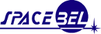
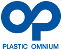
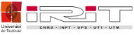
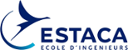

Esterel Technologies has chosen the Papyrus technology platform from CEA LIST as a core component of its SCADE System model-based systems engineering product offering and is extremely pleased with its quality and efficiency as well as the common developments undertaken within our common LISTEREL Laboratory.
Eric Bantégnie, President & CEO of Esterel Technologies, a wholly owned subsidiary of ANSYS, Inc.
For the safety study of its companion robots, Aldebaran uses Papyrus as complex system modelling tool.
Aldebaran detailled usage of Papyrus: Aldebaran Robotics designs and manufactures humanoid robots. Our current market is research and education but we will soon address the customer market. For this very demanding market, the dependability and the reliability are crucial. Within the Romeo 2 project, Aldebaran collaborates with CEA LIST to build the model of its humanoid robots in UML (and its extension to robotics, RobotML) with Papyrus. Papyrus made very easy the modelling of Romeo with its 37 actuators, more than 100 sensors, the 4 embedded processors and the 40 microcontrollers of its distributed architecture. This modelling will be the first step of the safety analysis that we have to proceed before designing the robots we will deliver to customers.
About: Rodolphe Gelin (1965) started his career at CEA (French Atomic Energy Commission). He has been working there for 10 years on mobile robots control for industrial applications and on rehabilitation robotics. Then he has been in charge of different teams working on robotics, virtual reality and cognitics. From 2006 to 2008, he was in charge of business development for Interactive System Program. He has participated to the European Coordinated Action CARE that supports the ETP EUROP on robotics in charge of the robotic roadmap for the European Community. In 2009, he joined Aldebaran Robotics as head of collaborative projects. He is the leader of the French project ROMEO that aims to develop a human size humanoid robot. Since 2015, he is Chief Scientist Officer at Aldebaran Robotics.
Rodolphe Gelin, Chief Scientist Officer at Aldebaran Robotics
Given the success of this pilot project, the Eclipse and Papyrus based toolchain is now being deployed on most embedded-C projects at Spacebel.

Arnaud Bourdoux, Project Manager at Spacebel
The development of TARANIS on-board software and the project itself are demonstrations that put in evidence benefits of using Eclipse Papyrus as modeling tool.
Johan Hardy, Software Engineer at Spacebel
SPACEBEL detailed usage of Papyrus: As sub-contractor of CNES, Spacebel works with Papyrus in the frame of the TARANIS mission. The general objective of the TARANIS mission is to analyse radiations from lightning and sprites in magnetosphere-ionosphere-atmosphere. Spacebel is in charge of the development of the On-Board Software (OBSW) of the satellite main payload. About the OBSW functionalities, it is mainly in charge of the handling, monitoring and the processing of the scientific data to be transmitted to the central data handling of the spacecraft. In other words, the software manages the main scientific instrument of the spacecraft. In the frame of this development, Papyrus is used as the UML modeler for the architecture and development of the OBSW. Taking the advantage of UML and Papyrus, the complete specification of the software is implemented in UML through Papyrus. Then, the architectural elements can easily be traced with their requirements. For instance, an operation (functionality) can be linked to a constraint (requirement). In doing so, the architectural design can be deduced from the specification by populating classes with operations, attributes, data types, etc. Besides UML, Spacebel has developed an extension to Papyrus. Since the target language of the software is the ANSI C, the semantic of UML didn’t permit us to map the C semantic in UML. Therefore, a functional C profile and several stereotypes have been developed aside of the project. The profile is actually enclosed in an Eclipse plugin and fully integrated with Papyrus. Finally, at the end of the chain, Spacebel generates all the C sources with the help of a C code generator. A text transformation is performed from UML to C. Furthermore, the documentation (software requirement document and architectural design document) is also generated from UML.
ALL4TEC is involved in the model based technologies since several years and works closely with the CEA List on many projects. To build the new version of its tool of SAFETY Analysis “Safety Architect”, ALL4TEC has selected Papyrus technologies as framework. The main added value is to focus our developments on CEA LIST field of expertise, and rely on a opened and dependable modeler.
This integration is performed as part of our common laboratory CALL4S, and the resulting perspectives, especially around the Open Source, are particularly welcomed by users and partners.
Jonathan Dumont, Safety Architect project manager at All4tec
Plastic Omnium company is evaluating to move from document based approach to model based system engineering. We were looking for an adaptive platform to avoid classical vendor lock-in. Papyrus offers flexibility in terms of customization and deployment. The achievements are a domain specific solution from System requirements to Autosar Software implementation.
About: After Five years as electronic architecture engineer within the research department of Peugeot SA, in 2010, Thibaud Thomas joined Plastic Omnium company within Plastic Omnium Auto Inergy division. As a controlled systems architect he has participated to product and process innovations. Group leader since 2013 he is in charge of system engineering in the research department. He also deals with controlled system architecture expertise field as a Plastic Omnium senior expert.

Thibaud Thomas, Controlled System Architecture Advanced innovation & research, Plastic Omnium
To complement its integrated tools for design and evaluation of cyber-physical systems, Sherpa Engineering has chosen Papyrus as a development platform for PhiSystem. For this new challenge, there was a need for expertise and for an efficient tool which meet SysML standard.
Thanks to our innovative laboratory with CEA-LIST and to Papyrus which is supported by a scientific and industrial community, we have successfully deployed PhiSystem for the benefit of our main customers.
About: Philippe Fiani, Research & Technologies Manager at Sherpa Engineering. Graduate in engineering from the Ecole Centrale de Paris, he became a specialist in Control System after 10 years of collaboration with ADERSA, a research company specialized in modelling and control and pioneer in Model Based Predictive Control. In 2004, he joined Sherpa Engineering as Control System Manager and in particular he developed the fuel cell related activities. In 2010, he was charged with the R&D and the Engineering Department. As a member of the Executive Board of Sherpa Engineering, he is now charged in the development and the deployment of a MBSE tool-based methodology dedicated to cyber-physical systems
Philippe Fiani, R&D Manager at Sherpa Engineering
Papyrus provides the complete package for software design professionals: from architects to developers. It is the only open source modeling tool that I know of that is truly industrial strength. Based on a well-known standard, it is characterized by its unique ability to be adapted to a wide variety of different domains, purposes, and ways of working.
About: Bran Selic is President and Founder of Malina Software Corp., a Canadian consultancy specializing in model-based engineering methods and technologies. Prior to founding Malina, he was an IBM Distinguished Engineer, responsible for IBM Rational's strategy for software development tools for the real-time/technical domain. In addition, during his four-decades long technical career, he acted as an entrepreneur, system architect, and software developer on a variety of large industrial projects in telecommunications, robotics, and aerospace. He chaired the standardization team for the widely-used UML standard, as well as a primary contributor to a variety of other modeling language standards (SysML, MARTE). Bran is on the editorial board of several leading technical journals focusing on software and is a frequent invited and keynote speaker at various technical conferences and events. He is an adjunct research scientist in several research institutions worldwide (including CEA LIST), and an adjunct at the University of Sydney in Australia.
Bran Selic, Malina Software Corp., Canada
I use Papyrus both for my research developments and for my teaching courses on UML or SysML. There are numerous reasons for that: Open source, developed by a reactive and competent research lab, integrated in the Polarsys project that involves so many big companies, fully compliant with the standards, fully customizable, … I am also very proud to contribute in its use in academia through the Papyrus4Education initiative.
About: Jean-Michel Bruel received his Ph.D. from the University Paul Sabatier (Toulouse) in December 1996. From September 1997 to August 2008, he was associate professor at the University of Pau. Currently head of the MACAO team (Models, Architectures, Components, Agility and prOcesses) of the IRIT (Institut de Recherche en Informatique de Toulouse) CNRS laboratory. His research areas include development of distributed, component-based applications, methods integration, and on the use of formal methods in the Component-Based Software Engineering context. He is full professor at University of Toulouse since 2008. He has been head of the Computer Science department of the Technical Institute of Blagnac from 2009 to 2012. He has founded the SysML-France association to promote the notation. He was (co-)General Chair of the ACM/IEEE MODELS conference and is a member of its steering committee. He is a member of the board of the SoSyM journal.

Jean-Michel Bruel, Professor, IRIT/University of Toulouse, France
Papyrus has be chosen by ESTACA, a French engineering school, for teaching and research. In one hand, several student projects consist in modeling embedded systems with Papyrus (e.g., modeling an indoor UAV with autonomous guidance for performance estimation using SysML). In the other hand, one of the mean research topic of the school is optimization of system parameters such as cost and reliability, combining MBSE and CSP problem solving paradigms. The proposed solution is then implemented as a Papyrus extension using its various powerful customization mechanisms (e.g., DSML support).
About: Patrick Leserf, born in 1969, received an engineering degree in computer science/electronic from ESEO (1993, Angers). He started to work for 10 years as R&D engineer and project leader in telecommunication industry (3G testing at Acterna). Mr Leserf was the technical coordinator of the PCRD “Matelo” project at ALL4TEC. Then he joined ESTACA, as associate professor. His research works concerns the model-based design of distributed real-time systems, and embedded networks for transportation. Mr Leserf was in charge of “O4A” (Open for Autosar) national collaborative project at ESTACA, integrating and demonstrating the Flexray network in Autosar. Mr Leserf is now working on the optimization of embedded system design with MBSE, in collaboration with the ISAE-DISC team at Toulouse.

Patrick Leserf, Associate Professor at ESTACA